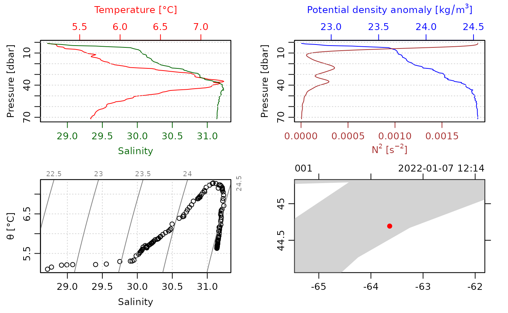

Abstract. The basics of downloading CTD data are outlined in this vignette, as a supplement to a shorter entry in the main vignette.
Basics
This function can download ctd data from the Bedford Basin Mooring Program (BBMP), Bermuda Atlantic Time Series (BATS), etc.
Finding Desired ID
BBMP For BBMP, this is the desired file from the
index. Once the index is downloaded using the dod.ctd
function, provide the item or file name from the index you want to
download for the argument ID.
BBMP Example
This is a basic example which shows you how to download ctd index
from the BBMP program in the year 2022 and download, read and plot the
first item in the index using the oce package.
library(dod)
library(oce)
#> Loading required package: gsw
index <- dod.ctd("BBMP", 2022, index=TRUE, file="bbmp.txt")
item <- index[1,"file"]
file <- dod.ctd("BBMP", 2022, item, file="bbmp.txt")
plot(read.ctd(file))
BATS For BATS, is the 5 digit cruise ID. From BATS documentation, cruise ID format is as follows: Format:
8 digit cast_ID
$XXXX### where,
$= cruise type
1=bats core
2=bats bloom a
3=bats bloom b
5=bats validation
6=Hydrostation
9=Ancillary cruise
XXXX= cruise number
### = cast numbereg. 10155005 = bats core cruise, cruise 155, cast 5 eg. 50050005 = bats validation , cruise 50 , cast 5
Oce examples to pull from: # Example with pre-trimmed data
Many of the object types supported by oce come with
built-in data. For an example, data(ctd) yields a CTD
profile that has been trimmed to just the downcast portion of the
sampling. (See the next section to learn how to do this trimming.) A
summary and plot (Figure 2) are created as follows.
library(oce)
data(ctd)
summary(ctd)
#> CTD Summary
#> -----------
#>
#> * Instrument: SBE 25
#> * Temp. serial no.: 1140
#> * Cond. serial no.: 832
#> * File: "/Users/kelley/git/oce/create_data/ctd/ctd.cnv"
#> * Original file: c:\seasoft3\basin\bed0302.hex
#> * Start time: 2003-10-15 15:38:38
#> * Sample interval: 1 s
#> * Cruise: Halifax Harbour
#> * Vessel: Divcom3
#> * Station: Stn 2
#> * Location: 44.684N 63.644W
#> * Data Overview
#>
#> Min. Mean Max. Dim. NAs OriginalName
#> scan 130 220 310 181 0 scan
#> timeS [s] 129 219 309 181 0 timeS
#> pressure [dbar] 1.48 22.885 44.141 181 0 pr
#> depth [m] 1.468 22.698 43.778 181 0 depS
#> temperature [°C, IPTS-68] 2.919 7.5063 14.237 181 0 t068
#> salinity [PSS-78] 29.916 31.219 31.498 181 0 sal00
#> flag 0 0 0 181 0 flag
#>
#> * Processing Log
#>
#> - 2018-11-14 20:03:47 UTC: `create 'ctd' object`
#> - 2018-11-14 20:03:47 UTC: `read.ctd.sbe(file = file, debug = 10, processingLog = processingLog)`
#> - 2018-11-14 20:03:47 UTC: `oce.edit(x = ctd, item = "startTime", value = as.POSIXct(gsub("1903", "2003", format(ctd[["startTime"]])), tz = "UTC") + 4 * 3600, reason = "file had year=1903, instead of 2003", person = "Dan Kelley")`
plot(ctd)Figure 2. An overview of a ctd dataset.
Accessing the data within this ctd object can be done
directly, e.g. ctd@data$pressure holds the pressure record,
but it is usually better to use an accessor function that is provided
with oce. This function is named [[, and it
takes a character string as an argument,
e.g. ctd[["pressure"]] yields the pressure column. The
accessor notation is preferable to direct access because it is simpler
for the user. For example, several oce objects store the
data in single-byte or two-byte chunks, to match the raw format used by
the instruments, and the accessor function takes care of translating
these values to what are sometimes called “science” units.
Exercise 1. Plot a profile of \(\sigma_\theta\) and \(N^2\) within the pycnocline in the built-in
ctd data set. (Hint: use subset().)
Example with raw data
Practicing Oceanographers may be wondering how the CTD cast used in the preceding section was trimmed of equilibration-phase and upcast-phase data. Spurious data from these phases must be trimmed as a first step in processing. For example, consider the following code.
Figure 3. Scanwise plot of the ctdRaw
sample data set. Note the spike at the start, the equilibration phase
before the downcast, and the spurious freshening signal near the start
of the upcast.
This produces a two-panel plot (Figure 3) of the data as a time-series, revealing not just the desired downcast, but also an earlier equilibration phase and a later upcast. The x-axis in Figure 3 is the scan number, which is a convenient index for extraction of the downcast portion of the profile by an essentially manual method, e.g. proceeding with a sequence of commands such as
plotScan(ctdTrim(ctdRaw, "range",
parameters=list(item="scan", from=140, to=250)))
plotScan(ctdTrim(ctdRaw, "range",
parameters=list(item="scan", from=150, to=250)))This method of making decisions based on plotted information is probably the most robust method of trimming data. However, for quick work, users may be satisfied with the results of automatic downcast detection, e.g.
ctdTrimmed <- ctdTrim(ctdRaw)It should be noted that ctdTrim() inserts entries into
the object’s log file, so that the details of how the trimming was done
are recorded together with the data.
Once the profile has been trimmed, one may wish to use
ctd.decimate() to smooth the data and interpolate the
smoothed results to uniformly-spaced pressure values.
Taking these things together, a quick visual examination of a CTD file takes just one line of code:
plot(ctdDecimate(ctdTrim(read.ctd("stn123.cnv"))))Example with WOCE archive data
The package has a harder time scanning the headers of data files in
the WOCE archive format than it does in the Seabird format illustrated
in the previous examples. This is mainly because front-line researchers
tend to work in the Seabird format, and partly because the WOCE format
is odd. For example, the first line of a WOCE file is of the form
CTD,20060609WHPOSIODAM (or BOTTLE,...).
Scanning the item to the left of the comma is not difficult (although
there are variants to the two shown, e.g. CTDO sometimes
occurs). The part to the right of the comma is more difficult. The first
part is a date (yyyymmdd) so that is no problem. But then
things start to get tricky. In the example provided, this text contains
the division of the institute (WHPO), the institute itself (SIO), and
initial of the investigator (DAM). The problem is that no dividers
separate these items, and that there seem to be no standards for the
item lengths. Rather than spend a great deal of time coding special
cases (e.g. scanning to see if the string WHOI occurs in
the header line), the approach taken with oce is to ignore
such issues relating to quirky headers, on the assumption that users can
scan human-written headers with high skill.
Quite commonly, CTD profiles taken during a cruise are collected together in a sequence of files in a given directory. For a real-world example, one might visit the website mentioned in the code provided below, download and expand the zip file, enter the directory thus formed, and run the code to get an overall TS plot for all the CTD stations of this cruise. (Caution: the link seems to change from time to time.)
library(oce)
# http://cchdo.ucsd.edu/data/7971/ar18_58JH19941029_ct1.zip
# setwd("~/Downloads/ar18_58JH19941029_ct1")
files <- system("ls *.csv", intern=TRUE)
for (i in 1:length(files)) {
x <- read.ctd(files[i])
if (i == 1) {
plotTS(x, Slim=c(31, 35.5), Tlim=c(-2, 10), type='o')
} else {
points(x[["salinity"]], x[["potential temperature"]])
lines(x[["salinity"]], x[["potential temperature"]])
}
}The [[ notation is explained in Section 3, but this
example conveys the gist, that it permits accessing data, or derived
data, from within an object.
In the above, lines connect the points within a given profile. This can be a useful method for a quick scan looking for outliers. Another is to colour-code the profiles, although this gets confusing with large datasets, in which case the method of the following exercise might be useful.
Exercise 2. (advanced) Make a multi-file plot summarizing the TS relationship in a collection of CTD datasets, with each plot file showing the overall relationship in gray and the individual profile in black.
Solutions to exercises
Exercise 1. Plot a profile of \(\sigma_\theta\) and \(N^2\) within the pycnocline in the built-in
ctd data set. (Hint: use subset().)
Although one may argue as to the limits of the pycnocline, for illustration let us say it is in 5 dbar to 12 dbar range. One way to do this is
library(oce)
data(ctd)
pycnocline <- ctdTrim(ctd, "range",
parameters=list(item="pressure", from=5, to=12))
plotProfile(pycnocline, which="density+N2")Another is
library(oce)
data(ctd)
pycnocline <- subset(ctd, 5 <= pressure & pressure <= 12)
plotProfile(pycnocline, which="density+N2")Exercise 2. (advanced) Make a multi-file plot summarizing the TS relationship in a collection of CTD datasets, with each plot file showing the overall relationship in gray and the individual profile in black.
The code provided below creates 91 PNG files, with names
ar18_01.png, ar18_02.png, etc. Loading these
in a view that permits quick paging through this file list is an easy
way to spot suspicious data, since each plot has the station number at
the top. (Users trying this example should bear in mind that this is a
fairly large dataset, so the processing will take up to a minute.)
library(oce)
# http://cchdo.ucsd.edu/data/7971/ar18_58JH19941029_ct1.zip
# setwd("~/Downloads/ar18_58JH19941029_ct1")
files <- system("ls *.csv", intern=TRUE)
n <- length(files)
ctds <- vector("list", n) # to hold the CTD objects
station <- vector("list", n)
for (i in 1:n) {
ctds[[i]] <- read.ctd(files[i])
station[[i]] <- ctds[[i]][["station"]]
}
S <- unlist(lapply(1:n, function(i) ctds[[i]][["salinity"]]))
T <- unlist(lapply(1:n, function(i) ctds[[i]][["temperature"]]))
p <- unlist(lapply(1:n, function(i) ctds[[i]][["pressure"]]))
overall <- as.ctd(S, T, p)
png("ar18_%02d.png")
for (i in 1:n) {
plotTS(overall, col='gray')
lines(ctds[[i]][["salinity"]], ctds[[i]][["potential temperature"]])
mtext(station[i], side=3, line=0)
}
dev.off()